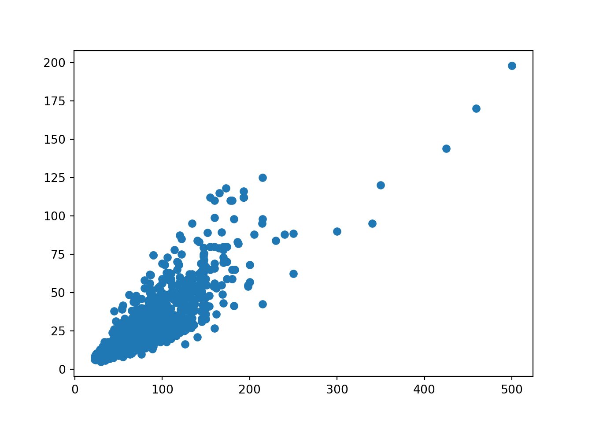
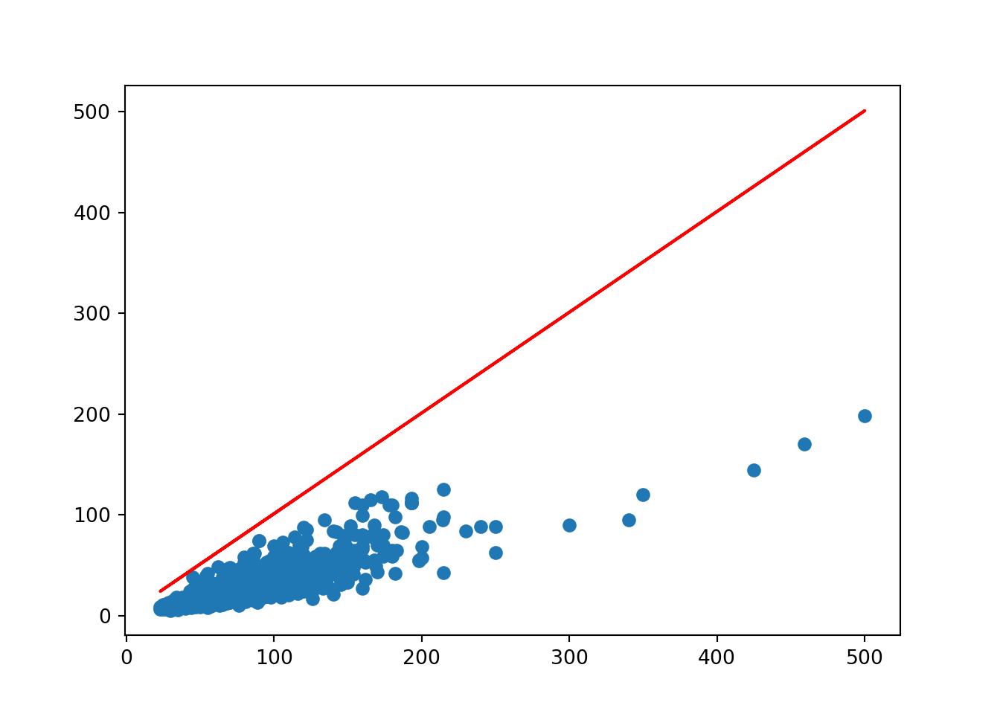
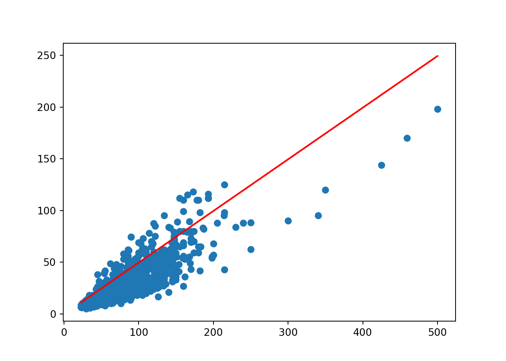
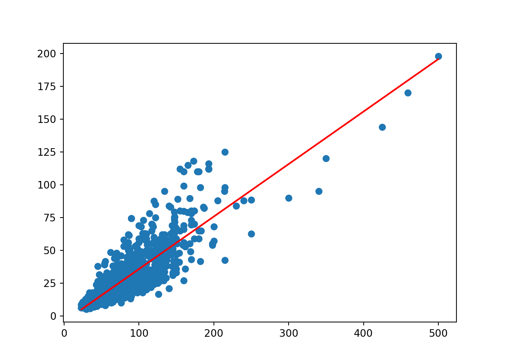
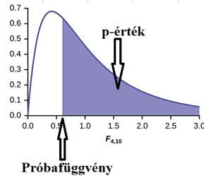
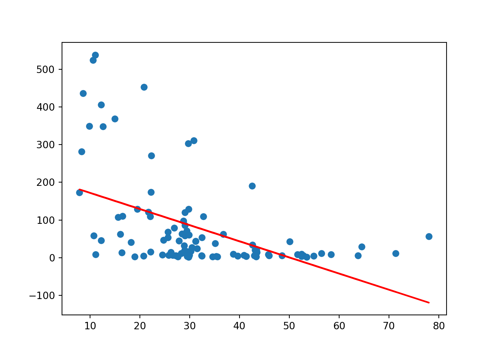

12 Kétváltozós lineáris regresszió
12.1 Budapesti lakások vizsgálata
A BP_Lakas.csv fájl egy olyan adattábla, ami 1406 budapesti lakásról 10 változó (oszlop) adatát tárolja:
- KinArMFt: lakás ára millió Ft-ban (MFt)
- Terulet: lakás területe négyzetméterben
- Terasz: teraszok száma a lakásban
- Szoba: szobák száma a lakásban
- Felszoba: félszobák száma a lakásban
- Furdoszoba: fürdőszobák száma a lakásban
- Emelet: emeletek száma a lakásban
- DeliTaj: lakás déli fekvésű-e? (1 = igen; 0 = nem)
- Buda: lakás déli fekvésű-e? (1 = igen; 0 = nem)
- Kerulet: lakás kerülete (1 - 22)
Olvassuk be az adattáblát egy pandas data frame-be egy readr_csv függvény segítségével! A fájl olyan értelemben “jól vislekedő” csv, hogy az oszlopokat vesszők választják el egymástól, és a tizedes helyet tizedes pont jelöli, így nem kell a függvényben semmit sem külön paraméterezni. A beolvasás után egy info metódussal nézzük meg, hogy rendben van-e minden a betöltött data frame-el.
# Elemzéshez és ábrázoláshoz szükséges csomagok betöltése
import numpy as np
import pandas as pd
import matplotlib.pyplot as plt
import scipy.stats as stats
# Budapesti lakások adatainak beolvasása
BP_Lakas = pd.read_csv("BP_Lakas.csv")
BP_Lakas.info()## <class 'pandas.core.frame.DataFrame'>
## RangeIndex: 1406 entries, 0 to 1405
## Data columns (total 10 columns):
## # Column Non-Null Count Dtype
## --- ------ -------------- -----
## 0 KinArMFt 1406 non-null float64
## 1 Terulet 1406 non-null float64
## 2 Terasz 1406 non-null float64
## 3 Szoba 1406 non-null int64
## 4 Felszoba 1406 non-null int64
## 5 Furdoszoba 1406 non-null int64
## 6 Emelet 1406 non-null int64
## 7 DeliTaj 1406 non-null int64
## 8 Buda 1406 non-null int64
## 9 Kerulet 1406 non-null int64
## dtypes: float64(3), int64(7)
## memory usage: 110.0 KBElső ránézésre rendben vagyunk: 10 oszlopunk = változónk van a megfelelő oszlopnevekkel, mindenhol 1406 non-null megfigyeléssel.
Vizsgáljuk meg a lakások kínálati árának és a területének a kapcsolatát! Mivel logikusan azt gondolhatjuk, hogy a terület fogja meghatározni az árak alakulását, és nem fordítva, így a terület lesz a magyarázóváltozónk (x tengely) és az ár az eredményváltozónk (y tengely). A pontdiagrmos ábrázoláshoz a scatter című matplotlib függvényt tudjuk bevetni. A függvényben az első paraméter legyen az az oszlop, ami a diagram x tengelyét adja, míg a második az, amelyik az y tengelyét szolgáltatja az ábrának.

Láthatjuk, hogy a terület növekedésével nőnek az árak, és ez a kapcsolat szoros is lehet, mert a pontokra gondolatban is elég jó pontossággal rá tudunk illeszteni egy pozitív meredekségű egyenest.
Mindezt Stat. I-es ismereteink alapján egy korreláció kiszámításával tudjuk megerősíteni. Itt Pythonban korrlációt a scipy csomag stats moduljában lakó pearsonr függvénnyel tudunk számolni, aminek a bemenete a két numerikus változó, amik között korrelációt akarunk számolni. Itt a sorrend mindegy, nem számít hogy a magyarázóváltozót vagy az eredményváltozót adom meg a függvénynek első paraméterként.
## PearsonRResult(statistic=0.8597347987405766, pvalue=0.0)Az eredmény statistics része maga a korrelációs együttható, aminek jele \(r\). Tehát, \(r=+0.8597\). Ismétlésként meg kell emlékezni arról, hogyan is kell egy korrelációt értelmezni. Először is, egy korreláció mindig \(\pm1\) közötti érték, azaz \(-1\leq r \leq+1\). Egyébként, korreláció kapcsán mindig két kétdolgot kell vizsgálni:
- Korreláció előjele: Ha ez pozitív, akkor a két változó közti kapcsolat egyirányú (ha nő az egyik érték,akkor várhatóan nő a másik is). Míg ha az előjel negatív, akkor a két változó közti kapcsolat ellentétes irányú (ha nő az egyik érték,akkor várhatóan csökken a másik is).
- Esetünkben pozitív korrelációról beszélünk, azaz ha nő a lakás területe, akkor várhatóan nő az ára is. Ez teljesen logikus.
- Korreláció abszolút értéke: Ha az abszolút érték, \(0.3\) alatti (\(|r|<0.3\)), akkor a megfigyelt kapcsolat gyenge erősségű. Ha \(0.3-0.7\) közötti (\(0.3\leq|r|\leq0.7\)), akkor közepes, míg \(0.7\) feletti abszolút érték (\(|r|>0.7\)) esetén erős kapcsolatról bezsélünk a két változó között.
- Esetünkben a korreláció abszolút értéke nagyobb, mint \(0.7\) (\(0.86>0.7\)), így a lakások területe és ára közötti kapcsolat erősnek minősíthető.
Erre a korreláció értelmezésre utalt az a jelenség a fenti pontdiagramon, hogy a pontokra gondolatban is elég jó pontossággal (korreláció abszolút értékben magas) rá tudunk illeszteni egy pozitív meredekségű (pozitív előjelű korreláció) egyenest.
Ezen a korreláción túl kapunk a függvényből egy p-értéket is. Ez egy olyan nullhipotézishez tartozik, amely azt mondja, hogy ez a korreláció a sokaságban (a nem megfigyelt lakások körében) lehet akár nulla is. Tehát, a \(H_0\) itt azt mondja, hogy a mintában megfigyelt korreláció a sokaságban tök \(0\), a megfigyelt kapcsolat a sokaságban (a nem megfigyelt lakások körében) nem létezik. Szóval, itt a következő null- és alternatív hipotézis párosról van szó:
- \(H_0:r=0\)
- \(H_1:r\neq0\)
Ez az ominózus p-érték a fenti \(H_0\) és \(H_1\) pároshoz gyakorlatilag a függvény eredménye szerint \(0.0\), szóval ez a \(H_0\) minden szokásos szignifikancia-szinten elvethető, a korreláció a sokaságban (a nem megfigyelt lakások körében) nem vehető nullának, a a megfigyelt kapcsolat a sokaságban igenis szignifikánsan létezik.
A korreláció (\(r\)) négyzete megadja a determinációs együttható, tehát az \(R^2=r^2\) értékét. Mivel a korreláció egy \([-1,+1]\) közötti szám, így négyzete egy \([0,1]\) közötti érték lesz, és így százalékosan értelmezhető: megadja, hogy az \(x\) hány százalékban magyarázza \(y\) alakulását/ingadozását:
korrelacio = stats.pearsonr(BP_Lakas.Terulet, BP_Lakas.KinArMFt)[0] # a két számból az első, a 0. indexű volt ugye maga a korreláció
R_negyzet = korrelacio**2
R_negyzet## 0.7391439241654997Esetünkben tehát azt mondhatjuk, hogy a Terulet \(73.914\%\)-ban határozza meg a KinAr alakulását. Vagy másképpen: a Terulet ismeretében \(73.914\%\)-os pontossággal lehet megcsülni a KinAr értékét. Ez így egy egészen jó előrejelző modell lenne, mivel a 10% alatti \(R^2\)-ű előrejelző modell magyarázóereje gyenge, 10%-50% között a magyarázóerőt közepesnek vesszük, és 50% felett (tehát ha a modell az eredményváltozóban lévő információ legalább felét megmagyarázta) mondjuk erősnek.
Ennyiből felmerülhet bennünk, hogy csináljunk egy olyan statisztikai modellt, ami a lakásárakat akarja előrejelezni a terület segítségével (hiszen abszolút értékben ezzel erősen korrelál a lakások kínálati ára)! Ez a modell lesz a kétváltozós lineáris regresszió! Ez a regresszió vagy más néven regressziós egyenes, az \(y=KinAr\) és \(x=Terulet\) pontdiagramon a pontokra legjobban illeszkedő egyenes.
Lássuk hát, hogyan is használható előrejelzésre ez a regressziós egyenes, és azt is nézzük meg, hogy miképpen tudja a ggplot berajzolni ezt az egyenest, mint a pontdiagramra legjobban illeszkedő egyenest!
12.2 A Kétváltozós Lineáris Regresszió OLS elvű becslése
Az előző fejezetben már bevezettük az alábbi általános jelöléseket, de most álljon itt még egyszer a dolog, emlékeztetőként:
- \(y\) := KinArMFt (eredményváltozó, amit előre akarunk jelezni)
- \(x\) := Terulet (magyarázóváltozó, aminek ismeretében el akarjuk végezni az előrejelzést)
Középiskolában az \(x\), \(y\) koordináta rendszerben egy egyenes egyenletét az alábbi általános jelölésekkel írta le az ember.
\[y=mx+b\]
Itt ugye \(m\) volt az egyenes meredeksége, míg \(b\) a konstans tag, vagy másnéven tengelymetszet. A \(b\), azaz a tengelymetszet megadja, hogy az egyenes hol metszi el az \(y\) tengelyt, míg az \(m\) megadja, hogy ha +1 egységet előre lépünk az \(x\) tengelyen, akkor az \(y\) tengelyen mennyit kell előre haladni, hogy az egyenesen maradjunk. Tehát, a meredekség megmutatja, hogy milyen gyorsan emelkedik/csökken az egyenes.
Lineáris regresszióban a fenti egyenes egyenlet az alábbi általános alakot ölti:
\[\hat{y}=\beta_1x+\beta_0\]
Ebben a felírásban az \(\hat{y}\) jelenti az egyenletből becsült árakat. Ez a legfontosabb módosítás az egyenletben, hiszen \(\hat{y} \neq y\)!! Az \(y\) a valós ára a lakásnak, míg az \(\hat{y}\) a regressziós egyenes alapján, a \(Terulet\) ismeretében becsült ár. Csak akkor lehetne \(\hat{y} = y\) minden pontra (azaz minden lakásra), ha \(R^2=100\%\) lenne, amit a pontdiagramon is láttunk, hogy nem áll fenn, mert nem illeszkedik minden pont az egyenesre! Ezen kívül tisztán látszik, hogy a második egyenletben a meredekséget és a tengelymetszetet csak “átbetűztük”: \(\beta_1=m\) és \(\beta_0=b\).
Az egyenletben \(x\) ismert minden lakásra, így nekünk csak a \(\beta\)-kat igazából valahogy meghatározni, hogy az egyenlet ténylegesen használható legyen a lakásárak megbecslésére. Ezt csinálja a ggplot is, amikor berajzolja a trendvonalat a pontdiagramon.
A \(\beta\)-k meghatározása teljesen logikus módon úgy történik, hogy az árakra (\(y\)) adott becsléseink hibája minimális legyen. A becslési hibát az ún. \(SSE\) mutatóval mérjük: \(Sum of Squared Errors (SSE) = \sum_{i=1}^n(y_i-\hat{y_i})^2\).
Az \(SSE\)-ben, mint hibafüggvényben az egyedenkénti \(y_i-\hat{y_i}\) hibatagot két okból emeljük négyzetre:
- Büntetni kell az alá- és fölébecsléseket is…
- …DE az abszolút érték függvény nem differenciálható, ami egy szükséges tulajdonság ha egy függvényt minimalizálni szeretnénk
Nézzük is meg, hogyan működik az \(SSE\) a gyakorlatban! Első körben adunk valami kezdeti tippeket a \(\beta\)-kra, majd kiszámoljuk a \(\hat{y}\)-okat mind az 1406 lakásra, tehát meglesz minden \(\hat{y_i}\), \(i=1\)-től \(i=n\)-ig:
# Kezdetben minden Bétára azt tippeljük, hogy az értéke = 1
Beta0 = 1
Beta1 = 1
# Kiszámoljuk az y kalapokat, azaz a becsült árakat ezekkel a Bétákkal
BP_Lakas['BecsultAr'] = Beta1*BP_Lakas.Terulet + Beta0
# Kiszámolhatjuk a becslések hibáját is minden lakásra
BP_Lakas['Hiba'] = BP_Lakas.KinArMFt - BP_Lakas.BecsultAr
# Nézzük meg mit alkottunk
BP_Lakas.loc[:,["KinArMFt", "BecsultAr", "Hiba"]]## KinArMFt BecsultAr Hiba
## 0 10.7 33.0 -22.3
## 1 10.0 33.0 -23.0
## 2 10.5 33.0 -22.5
## 3 12.0 35.0 -23.0
## 4 13.0 35.0 -22.0
## ... ... ... ...
## 1401 37.0 81.0 -44.0
## 1402 21.0 84.0 -63.0
## 1403 42.0 93.0 -51.0
## 1404 22.0 101.0 -79.0
## 1405 32.5 117.0 -84.5
##
## [1406 rows x 3 columns]Láthatjuk, hogy a kezdeti tippeink a Bétákra még nem valami jók, 23-24 millió Ft-ot hibázik kb. a becslésünk lakásonként.
Nézzük meg, hogy a jelenlegi, csupa 1 \(\beta\)-k mellett milyen alakot ölt a BecsultAr oszlopban lévő \(\hat{y_i}\)-k által meghatározott regressziós egyenes! Itt egy olyan trükköt vetek be, hogy a korábban használt matplotlib csomag pontdiagramos scatter függvényére egy sima plot függvénnyel rárakom a regressziós egyenes \(x\) és \(\hat{y}\) koordinátáit, mint egy vonaldiagram. És ezzel akkor szépen ki is rajzolódik a jelenlegi \(\beta_0,\beta_1\) értékekkel adódó regressziós egyenes:
plt.scatter(BP_Lakas.Terulet, BP_Lakas.KinArMFt)
plt.plot(np.array(BP_Lakas.Terulet),
np.array(BP_Lakas.BecsultAr), 'red')
plt.show()
Láthatjuk, hogy ez a regressziós egyenes még jó béna: a valós pontokhoz képest sokkal magasabban fut, nem jól illeszkedik rájuk.
Számoljuk is ki, hogy összességében mennyi a négyzetes hibánk, tehát az \(SSE\)! Itt azt használjuk, hogy a data frame oszlopokkal, mint vectorokkal tudunk az R-ben számolni:
## 4767764.1886## 4767764.1886Giganagy az SSE, de ezen már az előbbiek alapján meg sem lepődünk. :)
Az előbbi pontdiagram alapján azt láthatjuk, hogy a regressziós egyenesnek az a baja, hogy túl magasról indul (túl magas a tengelymetszet) és túl gyorsan is emelkedik (túl magas a meredekség). Szóval mindkét \(\beta\)-t csökkentsük. Szemmértékre nem tűnik rossznak ha az egyenest \(\beta_0=-0.5\)-ról indítjuk, és az emelkedés ütemét megfelezzük: \(\beta_1=0.5\). Nézzük is meg mit tudunk ezzel alkotni:
# Újra értékadás a Bétáknak
Beta0 = -0.5
Beta1 = 0.5
# Kiszámoljuk az y kalapokat, azaz a becsült árakat ezekkel a Bétákkal
BP_Lakas.BecsultAr = Beta1*BP_Lakas.Terulet + Beta0
# Kiszámolhatjuk a becslések hibáját is minden lakásra
BP_Lakas.Hiba = BP_Lakas.KinArMFt - BP_Lakas.BecsultAr
# Ábrázoljuk az új egyenest a pontdiagramon
plt.scatter(BP_Lakas.Terulet, BP_Lakas.KinArMFt)
plt.plot(np.array(BP_Lakas.Terulet),
np.array(BP_Lakas.BecsultAr), 'red')
plt.show()
Ez már sokkal jobban néz ki! De vajon csökkent az \(SSE\) is?
## 352004.66865Jepp, \(352005<4767764\), szóval ez objektívan, és nem csak diagramról nézve is egy jobb illeszkedés! :)
Mielőtt továbblépünk bevezetek egy jelölést, \(\epsilon\)-al fogjuk jelölni a regressziós modell hibatagját. Ezzel, a kódban lévő első képlet formálisan így néz ki: \(SSE=\sum_{i=1}^n(\epsilon_i)^2\).
Akkor hát, hagyjunk fel a “kézimunkával”, és kerestessük meg a gépállattal azokat a \(\beta\)-kat, amikkel a lehető legkisebb \(SSE\)-t kapjuk!
Ehhez először megcsinálunk egy külön R függvényt az \(SSE\)-re, ami \(SSE(\beta_0,\beta_1)\) alakot ölt. Tehát, megadja az \(SSE\)-t a \(\beta\)-k függvényében:
# a függvény megadása
def SSE(x):
return np.sum((BP_Lakas.KinArMFt-(x[0]+x[1]*BP_Lakas.Terulet))**2)
# a függvény használata úgy, hogy mindkét Béta értéknek 1-et mondunk
SSE(np.array([1,1]))## 4767764.1886Láss csodát a csupa 1 \(\beta\)-kra ugyan azt az \(SSE\)-t kapjuk, mint korábban! :)
Na, ezt az \(SSE\) függvényt felhasználva meg tudjuk kerestetni gépállattal hol vannak azok a \(\beta\)-k, amik mellett a legkisebb összesített négyzetes modellhibát kapjuk. A használt minimize függvény a scipy csomag lakója:
from scipy.optimize import minimize # függvény importja scipy-ból
eredmeny = minimize(SSE,np.array([1,1])) # az hiba minimalizálást a minden Béta = 1 pontból indítjukAz újonnan létrehozott, eredmeny objektumból, ami dictionary típusú, ki tudjuk olvasni, hogy mik lettek a \(\beta\)-k, és meg tudjuk nézni azt is, hogy mi az a legkisebb \(SSE\) érték, amit el tudtunk érni:
## array([-4.31228957, 0.40019634])## 141310.92681266984Ezzel a végső regressziós egyenletünk: \(BecsultAr=-4.312 + 0.400\times Terulet\). Ez így az úgynevezett OLS (Ordinary Least Squares) feladat megoldása.
Meg is nézhetjük, hogy az ezekkel a \(\beta\)-kal rajzolt egyenes miképpen néz ki a pontdiagramon:
# Újra értékadás a Bétáknak
Beta0 = eredmeny.x[0]
Beta1 = eredmeny.x[1]
# Kiszámoljuk az y kalapokat, azaz a becsült árakat ezekkel a Bétákkal
BP_Lakas.BecsultAr = Beta1*BP_Lakas.Terulet + Beta0
# Kiszámolhatjuk a becslések hibáját is minden lakásra
BP_Lakas.Hiba = BP_Lakas.KinArMFt - BP_Lakas.BecsultAr
# Ábrázoljuk az új egyenest a pontdiagramon
plt.scatter(BP_Lakas.Terulet, BP_Lakas.KinArMFt)
plt.plot(np.array(BP_Lakas.Terulet),
np.array(BP_Lakas.BecsultAr), 'red')
plt.show()
Ami nagyon fontos, hogy amiatt, hogy a hibát négyzetesen értelmeztük OLS-ben, ezek a \(\beta\)-k,a mit megkaptunk egyértelműek!! Akárhányszor futtatom az optimalizálást mindig ugyan ezeket az értékeket fogom kapni! Ha a hibatagok összeadásakor abszolút értéket alkalmaztam volna, akkor ez a luxus nem lenne meg! Ott minden optimalizálásnál fennállna az esélye, hogy más \(\beta\)-kat kapok, mint az előző esetben, és a \(\beta\)-król nem is tudnám eldönteni, hogy ezekkel az értékekkel kapom-e ténylegesen a legkisebb becslési modellhibát!
A négyzetesen mért hiba esetében ez az egyértelműségi probléma azért nincs meg, mert valójában a gép itt nem vaktában keresi a \(\beta\)-kat! Az OLS feladat megoldása (tehát a legkisebb \(SSE\)-t adó \(\beta\)-k) kifejezhetők egy fix képlettel.
Valójában a kétváltozós \(SSE(\beta_0,\beta_1)=\sum_{i=1}^n(y_i-\hat{y_i})^2=\sum_{i}(y_i-\beta_0-\beta_1x_i)^2\) függvény minimumhelyének meghatározása történik ezen a ponton. Mivel a data frame-ben minden eredményváltozó (\(y_i\)) és magyarázóváltozó (\(x_i\)) érték ismert, így ezek a függvényben konstansnak vehetők, a függvény két változója csak a \(\beta_0\) és a \(\beta_1\). Emiatt a függvény minimumhelyét úgy kereshetjük meg, hogy vesszük ennek az \(SSE(\beta_0,\beta_1)\) hibafüggvénynek a parciális deriváltjait a két \(\beta\) szerint, és azokat egyenlővé tesszük nullával.
Magyarul megoldjuk az alábbi két egyenletből álló egyenletrendszert:
\[\frac{\partial SSE(\beta_0,\beta_1)}{\partial \beta_0}=0\]
\[\frac{\partial SSE(\beta_0,\beta_1)}{\partial \beta_1}=0\]
Az egyenletrendszer megoldásával kifejezhető az a fix formula, amivel az OLS elven számított \(\beta_0\) és \(\beta_1\) értékek megadhatók:
\[\hat{\beta_1}=\frac{\sum_{i=1}^n{(x_i-\bar{x})(y_i-\bar{y})}}{\sum_{i=1}^n{(x_i-\bar{x})^2}}\]
\[\hat{\beta_0}=\bar{y}-\hat{\beta_1}x\]
Azt, hogy konkrétan hogyan jön ki ez a csodaszép két formula szorgalmi feladatként levezethető +1 pontért. :)
A gyakorlati szempontból azt kell látni, hogy minimalizálási feladathoz nem is kell az optim függvény, mert a megoldása van egy-egy fix képlet. Emiatt használják az OLS regressziót mai napig előszeretettel: fix képlettel megadhatók a \(\beta\) együtthatók, és nem kell a megadásukhoz optimalizálni!
12.3 Az OLS Regresszió magyarázóerejének mérése
Megmérhetjük azt is, hogy a lakások területe hány %-ban magyarázza az áraik ingadozását az átlagos ár körül. Sőt, igazából ezt meg is mértük már a korreláció négyzetével, a determinációs együtthatóval (\(R^2\)) és \(73.899\%\)-nak adódott. De ez az érték meghatározható az \(SSE\) hibafüggvényünk alapján is!
Ehhez ki kell számolni, hogy mennyi az eredményváltozóban lévő teljes ingadozás, azaz információtartalom, ami megmagyarázható. Ezt úgy mérjük meg, hogy megnézzük mi lenne az \(SSE\), ha az eredményváltozót (az árakat) 0 magyarázóváltozóval akarjuk megbecsülni, előrejelezni. Mondván ennél rosszabb becslést nem adhatunk az eredményváltozóra, így ennek a becslésnek az összhibáját tudjuk csökkenteni a magyarázóváltozókat használó regressziós modellel. Ha nincs magyarázóváltozónk, akkor a becslésünk minden esetben az átlagár lesz: \(\hat{y}=\bar{y}\).
Ezzel azt mondhatjuk, hogy a magyarázóváltozók nélküli nullmodell \(SSE\)-je valójában az \(SumOfSquaredTotals=SST=\sum_{i=1}^n(y_i-\bar{y})^2\), tehát az egyes lakások árainak négyzetes ingadozása az átlagos ár körül. Ezt hívjuk az eredményváltozóban lévő teljes megmagyarázható információnak!
Számoljuk is ezt ki a lásárakra!
## 541719.8980725462Ha a modell hibaszázalékát akarjuk megnézni, akkor egyszerűen az \(SSE\)-t elosztom az \(SST\)-vel. Hiszen ekkor megkapom, hogy a modell az összes megmagyarázható információból \(SST\) mennyit nem tudott megmagyarázni (\(SSE\)).
Nyilván, ha ennek a hányadosnak veszem a komplementerét (1-), akkor megkapom a modell által megmagyarázott információ-hányadot. Ez lesz a már ismerős R-négyzet, vagy szebb szóval determinációs-együttható: \(R^2=1-\frac{SSE}{SST}\).
Számoljuk is ki:
## 0.7391439241654998Tehát, a lakások területe továbbra is 73.914%-ban magyarázza a lakások árának ingadozását (alakulását). Ez egy elég jó modell még mindig! :)
Mindez képletek szintjén összefoglalva (szokjunk hozzá, hogy az angol könyvekben az SSE-t néha ESS-nek is jelölik :)):
12.4 A Regresszió magyarázóereje nem megfigyelt adatok körében
Szép és jó, hogy tudom, hogy a regresszióm magyarázóereje durván 74%, de ez csak azt mondja, hogy a megfigyelt 1405 lakás esetében magyarázza kb. 74%-ban a terület az árak alakulását! Szeretnék valamit mondani azért a modell magyarázóerejéről a nem megfigyelt lakások körében is! Hiszen az \(\hat{y}\) becsléseket arra akarom használni, hogy új, eddig még nem látott budapesti lakások esetében is meg tudjam becsülni az árakat a terület alapján! Tehát, a regresszió viszelkedésére vagyok kíváncsi a budapesti lakások sokaságában!
Ennek az eszköze a klasszikus Statisztikában a hipotézisvizsgálat!
A hipotézisvizsgálatunk kérdése tehát az, hogy mi történik a megfigyeléseinken (mintánkon) túli világban (leánykori nevén sokaságban) ezzel a regressziós modellel? Ha új lakásokra általánosítjuk ki az OLS regressziós modellt, akkor az \(R^2\) értéke megmarad vagy összeomlik 0-ra?
Ezt a kérdést lehet megválaszolni egy \(R^2\)-re adotthipotézisvizsgálattal, a Globális F-próbával.
Konkrétan ebben az esetben a hipotézisvizsgálat 4 lépéses folyamat így néz ki:
- Pesszimista emberek vagyunk, azt gondoljuk, hogy modellünk a mintán kívüli világban semmit nem magyaráz, azaz \(R^2=0\)
- Hopp, ez egy egyenlőséggel adott állítás! Mehet \(H_0\)-ba –> \(H_0: R^2 = 0\) (vagyis a modell nem szignifikáns a sokaságban)
- Alternatív esetben pedig legyünk optimisták: ebből a magyarázóerőből, amit a mintában mértünk, fog maradni akkor is valami, ha új lakásokat kezdünk vizsgálgatni a sokaságból –> \(H_1: R^2 > 0\) (vagyis a modell szignifikáns a sokaságban)
- A próbafüggvényt számoljuk a mintában mért R-négyzet, a mintaelemszám (\(n\)) és az egyenletben használt \(\beta\) paraméterek száma (\(p\)) alapján!
- Nekünk: \(R^2=0.73914, n=1406, p=2\)
- Próbafüggvény képlete: \(\frac{R^2/(p-1)}{(1-R^2)/(n-p)}=\frac{0.73914/(2-1)}{(1-0.73914)/(1406-2)}=3978.197\)
- Ez a próbafüggvény igaz \(H_0\) esetén egy úgynevezett F-eloszlást követ.
- Azt, hogy ez az eloszlás sűrűségfüggvényként hogy néz ki, két szabadságfok (szf vagy df) szabályozza:

- Ezt a két szabadságfokot mi az elemszámból és a magyarázóváltozók számából fogjuk megkapni a saját próbafüggvényünkre.
- \(df_1=p-1=2-1=1\) és \(df_2=n-p=1406-2=1404\)
- \(H_0\) akkor biztosan (100%-os valószínűséggel) igaz, ha \(R^2\) már a mintában is 0.
- Ezért a p-értékkel azt mérjük le, hogy “milyen messze vagyunk” ettől a \(H_0\) szempontjából ideális állapotról az igaz \(H_0\) esetén fennálló eloszlásban.
- Egész konkrétan így:
 - Tehát, a p-érték most a próbafüggvény feletti terület a megfelelő F-eloszlásban. Hiszen, így a próbafüggvény = 0 esetben 100%-ra jön ki a p-érték, ami azt jelenti, hogy \(H_0\)-t elvetni tuti, hogy hibás döntés. A próbafüggvény pedig arányosan nőni fog, ha \(R^2\) is nő, így ha kellően magas az érték, akkor már nagyon kicsi lesz a felette lévő terület, így alacsony annak a valószínűsége, hogy \(H_0\) elvetésével hibát követünk el.
- F-eloszlásban egy értékhez tartozó “felé esési” valószínűséget Pythonban a következő
scipy-oscdffüggvénnyel kapjuk meg (fiygeljünk arra, hogy a szabadságfokok sorrendje a 2.és 3. paraméterben számít):1-stats.f.cdf(3978.197,1,1404) = 1.1102e-16= 0.
- Azt, hogy ez az eloszlás sűrűségfüggvényként hogy néz ki, két szabadságfok (szf vagy df) szabályozza:
- Ez a p-érték jó alacsony, konkrétan 0%-nak vehető. Tehát még ha azt is, mondom, hogy csak \(\alpha=1\%\) valószínűséggel engedek meg igaz \(H_0\)-t elutasítani, ez a valószínűség még ennél is kisebb.
- Tehát nyugodtan elvethetem \(H_0\)-t, mivel ezzel a döntéssel 0% az esélye, hogy hibázok.
!!!VIGYÁZAT!!! –> Kellően nagy minták esetén ebből a tesztből simán kijöhet egy 3,4%-os mintabeli \(R^2\) esetén is, hogy \(H_1\) állítást kell igaznak venni. Ami annyit jelent, hogy azt a 3.4%-os \(R^2\)-et ki lehet általánosítani a megfigyeléseken túli világra is…de ez azért nem olyan jó eredmény, mintha egy 74%-os \(R^2\)-re jön ki ugyan ez egy ilyen hipotézisvizsgálatból!
Megjegyzés: Globális F-próbában \(H_0\)-t úgy is meg lehet fogalmazni, hogy a modellben a meredekség 0 a mintán kívüli világban: \(\beta_1=0\). A \(H_1\)-et meg ilyenkor úgy lehetne felírni, hogy a meredekség nem nulla: \(\beta_1\neq0\).
12.5 A modell együtthatóinak értelemzése
A kétváltozós OLS modellünk két \(\beta\) paramétere tehát az alábbiak és a következő jelentéstartalommal bírnak:
- \(\beta_0=-4.312\) –> Ő ugye a tengelymetszet, ami megadja, hogy a regressziós egyenes hol metszi az \(y\) tengelyt, ami az \(x=0\) helyen történik. tehát, technikailag megadja, hogy \(x=0\) esetén mi a regresszió \(\hat{y}\) becslése.
- \(\beta_1=+0.400\) –> Ez itt pedig a meredekség, ami megmutatja, hogy +1 egység elmozdulás esetén az \(x\) tengelyen hogyan változik az \(\hat{y}\).
A mi példánkban ez azt jelenti, hogy egy 0 \(m^2\)-ú lakás becsült ára -4.312 M Ft. Nyilván ezzel az értelmezéssel most nem kell foglalkozni, mivel az \(x=0\) hely jelen adatbázisunkban nem létezik. :)
A meredekség alapján pedig azt mondhatjuk, hogy +1 négyzetméter terület a lakás értékét várhatóan (hiszen \(\hat{y}\)-ról beszélünk) 0.400 M Ft-tal, azaz 400 E Ft-tal növeli. Ha nagyon közgázosak akarunk lenni, akkor ez a 400 ezer Ft a +1 négyzetméter hasznossága!
Kimondottan a \(\beta_1\) értelmezésénél nagyon-nagyon figyeljünk oda, hogy az értelmezés nagyon mértékegységfüggő!! Tehát, a +1 egység \(x\) az mindig az \(x\) mértékegységében értendő, ami most nekünk négyzetméter. Míg maga a \(\beta_1\)-nyi változás pedig értelemszerűen az \(y\) mértékegységében adott, ami a példánkban MFt!
12.6 Egy gyakorló példa COVID adatokon
Töltsük be a COVID_0326.xlsx c. Excel fájlt egy covid nevű pandas data frame-be!
## <class 'pandas.core.frame.DataFrame'>
## RangeIndex: 100 entries, 0 to 99
## Data columns (total 9 columns):
## # Column Non-Null Count Dtype
## --- ------ -------------- -----
## 0 Country 100 non-null object
## 1 Pop 100 non-null int64
## 2 PopDens 100 non-null int64
## 3 Prop_UrbanPop 100 non-null int64
## 4 PressLiberty 100 non-null float64
## 5 PerCapita_HealthExp_2016 100 non-null float64
## 6 COVID19_CasesPerMillion 100 non-null float64
## 7 ConstitutionalForm 100 non-null object
## 8 HeadOfState 100 non-null object
## dtypes: float64(3), int64(3), object(3)
## memory usage: 7.2+ KBA fájlból betöltött tábla a Föld 100 országára, mint megfigyelési egységekre nézve tartalmazza az alábbi 9 változó adatait:
- Country: ország neve
- Pop: ország népessége (fő)
- PopDens: népsűrűség (fő/km2)
- Prop_UrbanPop: Városi népesség aránya 2019-ben (%)
- PressLiberty: Sajtószabadsági index 2019-ben (alacsonyabb = szabadabb sajtó)
- PerCapita_HealthExp_2016: Egy főre jutó eüg-i kiadások, vásárlóerő-paritáson számolva (2016)
- COVID19_CasesPerMillion: Egymillió főre jutó COVID-19 fertőzöttek száma 2020.03.26-án
- ConstitutionalForm: államforma
- HeadOfState: államfő jogkörei (hatalmat gyakorol vagy csak reprezentatív szerepkörű)
Nézzünk egy kétváltozós regressziót az egymillió főre jutó COVID esetszám (COVID19_CasesPerMillion) és a sajtószabadsági index (PressLiberty) között. Egy logikus fektételezés, hogy az ország sajtószabadsági indexéből következik az, hogy a COVID járvány korai szakaszában (2020. március 26-án) hány COVID fertőzöttet regisztráltak az országban népességarányosan. Mondván egy sajtónyilvánosabb országban kevésbé tudja eltitkolni a központi egészségügy a fertőzöttek valódi számát. Ebből adódóan a magyarázóváltozó lesz a regresszióban az x = PressLiberty és az eredményváltozó pedig az y = COVID19_CasesPerMillion. És akkor a következő regressziós egyenlet \(\beta_1,\beta_0\) együtthatóit kéne megbecsülni a data frame-ben található 100 ország adatai alapján \[Becsült COVID19=\beta_1 \times PressLiberty+ \beta_0\]
Szerencsére, nem kell újra a minimize függvénnyel szenbednünk ahhoz, hogy megkapjuk a \(\beta_1,\beta_0\) regressziós együtthatók legkisebb négyzete elvű (OLS) becslését. A numpy csomag polyfit függvénye legyártja ezeket nekünk. A függvény első paramétere a magyarázóváltozó (\(x\)), második az eredményváltozó (\(y\)) a regresszióban. Míg a harmadik paraméterben, egy deg=1 beállítással azt jelezzük a gépállatnak, hogy a megadott \(x\) és \(y\) koordinátákra egyenest illesszen, ne valami bonyolultabb alakzatot (pl. másodfokú polinomot).
Beta1, Beta0 = np.polyfit(covid.PressLiberty, covid.COVID19_CasesPerMillion, deg = 1)
print([Beta1, Beta0])## [-4.283796024297913, 214.90178214724114]A 100 országra legjobban illeszkedő egyenes egyenlete tehát: \[Becsült COVID19=-4.28 \times PressLiberty+ 214.9\]
Tehát, ha a sajtószabadsági index 1 egységgel nő (azaz a sajtó egy egységgel kevésbé lesz szabad) egy országban, akkor várhatóan 4.28 eset/millió fővel csökken az ország fertőzötteinek száma. Érdekes eredmény, de ez feltehetőleg azért van így, mert 2020.03.26-i állapotokat tükröz az adatbázis, és akkor még intenzív tesztelést inkább csak a gazdagabb, és szabadabb sajtóval bíró országok végeztek. Plusz, a sok kis észak-európai államban (Belgium, Hollandia, Dánia, stb.) nagy a sajtószabadság, de nagy a városi népesség aránya és a népesűrűség is, így ott nyilván jobban tud terjedni a vírus. De nyilván benne van ebben a negatív együtthatóban az is, hogy ekkor egy Pakisztán nagyon igyekezett még eltitkolni a fertőzöttek valós számát és a Pakisztánnál szabadabb sajtóval bíró Olaszországban nem igazán tudták eltitkolni, hogy mekkora a baj.
Érdekességképpen elmondhatjuk, hogy egy 0 szajtószabadsági indexszel (tehát a legszabadabb sajtóval) rendelkező országan a modell 214.9 fertőzöttet becsül 1 millió főre.
Nézzük meg a modell %-os magyarázóerejét, azaz az \(R^2\) mutatóját.
## 24.40883012227656Láthatjuk, hogy a modellnek csak egy közepes (de nem gyenge!) magyarázóereje van, hiszen a sajtószabadsági index csak \(24.41\%\)-ban magyarázza az egymillió főre jutó esetszámok alakulását, ami 10%-50% közötti érték.
Nézzük meg, hogy ez az \(R^2\) lehet-e \(0\%\) nem megfigyelt országok esetén (a Föld országainak telejs sokaságában)? Azaz, nézzük meg a glogális F-próba p-értékét!
Ehhez először kell egy próbafüggvény a 4. fejezetből megismert képlet alapján:
Majd jobboldali módon jöhet a p-érték egy \(F(2-1,100-2)\) eloszlásból.
## 1.752395408782803e-07Tehát, a modell F-próbájának p-értéke csupán \(1.75 \times 10^{-7}\), ami kisebb még a legkisebb szokásosnak mondható \(\alpha=1\%=0.01\) szignifikancia-szintnél is, így azt mondhatjuk, hogy a modell \(24.41\%\)-os magyarázóereje szignifikáns marad a 100 megfigyelt országon kívüli világban is.
Mindezen eredmények vizualizálva pontdiagramon:
# Kiszámoljuk az y kalapokat, azaz a becsült árakat ezekkel a Bétákkal
covid['BecsultCOVID'] = Beta1*covid.PressLiberty + Beta0
# Ábrázoljuk az új egyenest a pontdiagramon
plt.scatter(covid.PressLiberty, covid.COVID19_CasesPerMillion)
plt.plot(np.array(covid.PressLiberty),
np.array(covid.BecsultCOVID), 'red')
plt.show()
Láthatjuk, hogy a pontokra legjobban illeszkedő egyenes negatív meredekségű, csökkenő trendet mutat, és aránylag jobban szóródnak az egyenes körül a pontok, és a 95%-os konfdiencia-intervalluma is viszonylag (de nem vészesen) tág, de az egymillió főre jutó esetszámok csökkenő trendje a PressLiberty függvényében még szépen kirajzolódik. Mindez az \(R^2\) által is jelzett közepes erőséggű kapcsolatra utal.